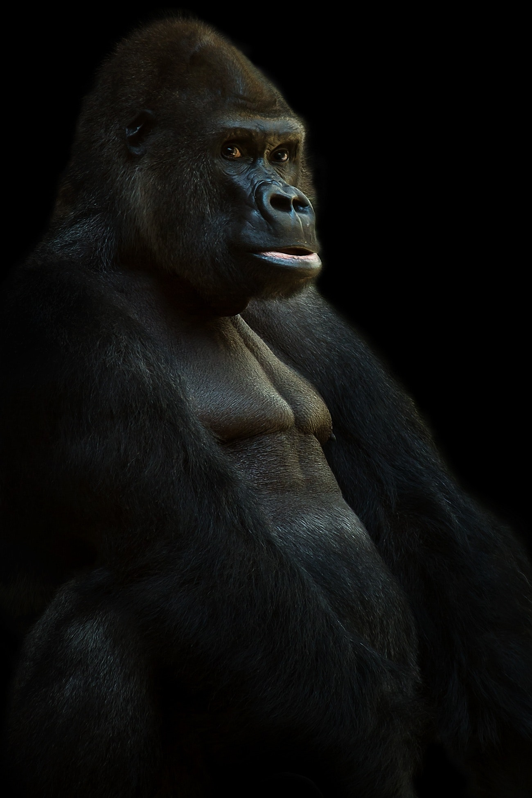
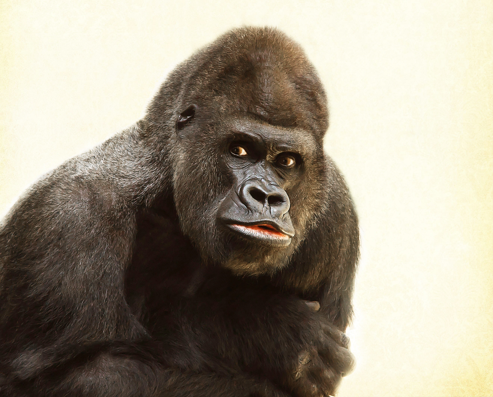
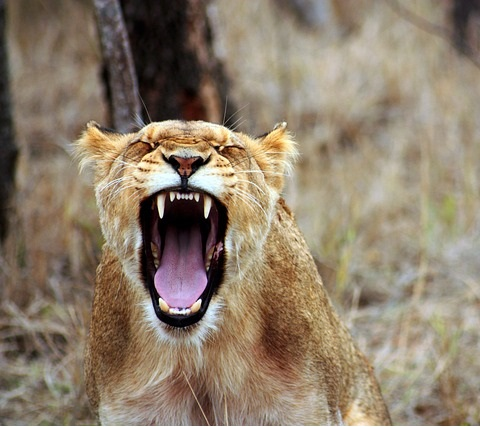

Kerchak
The leader of Tarzan's tribe and king of the apes before Tarzan. He is the biggest and strongest ape at the time. He has a temper and violent tendency.

Kala
Tarzan's foster mother. She lost her baby the same night that she rescued Tarzan from Kerchak. She raised him up in her loving arms.

Tublat
Tarzan's foster father. He doesn't like Tarzan because he is weaker than the other ape infants at his age.

Tantor
Tantor the elephant is the only friend that Tarzan has outside of his tribe. He sometimes let Tarzan ride on his back

Sabor
A vicious lioness who stalked and preying on the apes. She killed many of Tarzan's people